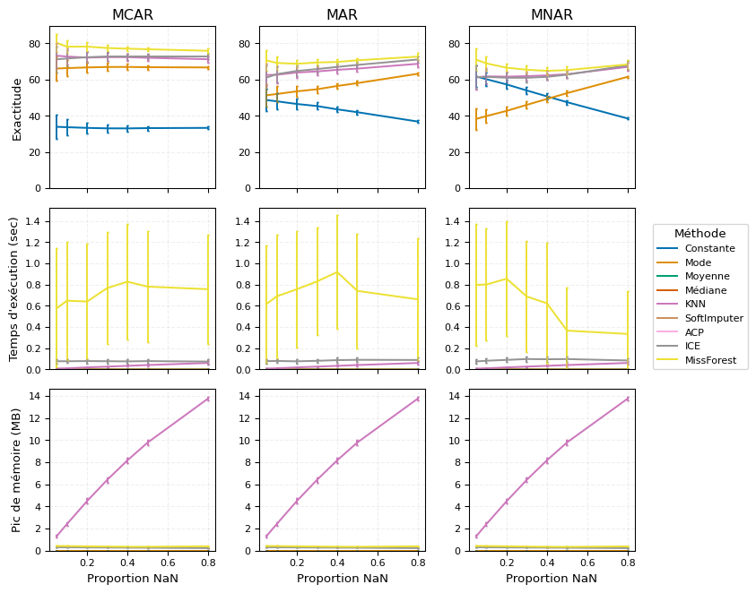
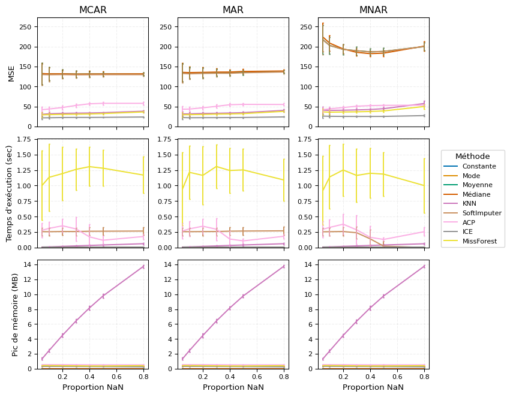

MissingDataLab - Simulation et imputation de données manquantes
Comparaison des méthodes d’imputation de données manquantes en science des données. Simulation et évaluation de l’efficacité des techniques de reconstruction de données incomplètes.
Mots clés
données manquantes, imputation, reconstruction de données, science des données, méthodes statistiques, analyse comparative
Qui n’a jamais eu ValueError: NaN lors d’une analyse de données. L’étape d’exploration commence souvent avec une analyse des données manquantes. Une donnée manquante correspond à l’absence d’une valeur dans un ensemble de données, là où une information est normalement attendue. Cela peut être dû à une erreur de collecte de la donnée ou une non-réponse lors d’enquête. Problème : un isna() se révèle souvent positif. On réalise alors un dropna() et le problème disparait ! On peut mieux faire.
1 Contexte et problématique
La présence de données manquantes peut pertuber les analyses, engendrer une perte d’informations, introduire des biais et réduire les performances de modélisations. Il faut alors comprendre les mécanismes de manquement des données, adapter la méthode de collecte lorsque c’est possible et imputer les données manquantes.
Ce projet réalisé en groupe pendant l’année de M2 SSD à l’UGA s’attache à savoir comment mettre en œuvre des stratégies d’imputation efficaces pour différents types de données manquantes : MCAR, MAR, MNAR ? Les objectifs étant de maintenir la validité d’une analyse, d’améliorer la performance et la fiabilité des modèles et d’éviter des conclusions erronées.
2 Données
Les données utilisées proviennent de Kaggle. Il s’agit d’un questionnaire concernant les comportements liés à la consommation de cigarettes, composé de 14 variables et de 1000 individus. Parmi ces variables, on trouve des informations telles que le nombre de cigarettes consommées par jour, le nombre d’expériences liées à la drogue, ainsi que des variables explicatives comme le groupe d’âge, le statut socio-économique, et l’accès ou non à une aide pour arrêter de fumer. Un jeu de données semblable a été simulé à l’aide de la bibliothèque simstudy (1). Ce jeu de données intègre des corrélations entre les variables. Cette approche permet d’explorer des scénarios variés et proches de la réalité :
Trois mécanismes liés à la variable représentant l’accès à de l’aide :
- une goutte d’eau rend illisible une réponse
- les personnes qui continuent à fumer cachent avoir eu de l’aide
- les personnes ayant eu de l’aide le cachent
Ensuite, trois mécanismes liés à la prévalence tabagique :
- un bug réseau empêche l’enregistrement de la réponse
- les personnes jeunes cachent le fait de fumer
- les personnes fumant beaucoup cachent leur consommation tagabique
3 Approche et méthologie
3.1 Typologie des données manquantes
Les données manquantes peuvent être classées en trois catégories principales, selon le mécanisme qui génère leur absence. Cette classification est essentielle pour choisir la méthode de traitement adaptée.
3.1.1 Données manquantes complètement aléatoires (MCAR)
La probabilité que la donnée soit manquante est indépendante de toute autre variable, observée ou non observée. Cela signifie que l’absence d’une donnée est totalement aléatoire et ne dépend d’aucune information contenue dans le jeu de données (2).
Exemple : lors d’un questionnaire papier, certaines réponses peuvent être perdues à cause d’un problème d’impression. Ici, l’absence de réponse ne dépend ni de la question posée ni des caractéristiques des répondants, ce qui signifie que les données sont absentes de manière totalement aléatoire.
Formule mathématique : décrite en annexe.
3.1.2 Données manquantes aléatoires (MAR)
La probabilité que la donnée soit manquante dépend uniquement des variables observées, mais pas de la valeur manquante elle-même. Autrement dit, l’absence d’une valeur est expliquée par des variables que l’on peut observer, mais pas par la valeur manquante en elle-même (3).
Exemple : dans une enquête sur l’état de santé, il se peut que les personnes plus âgées répondent moins souvent aux questions sur leur activité physique. Ici, l’absence de réponse dépend d’une variable observée (l’âge), mais pas directement du niveau d’activité physique de la personne.
Formule mathématique : décrite en annexe.
3.1.3 Données manquantes non aléatoires (MNAR)
La probabilité que la donnée soit manquante dépend au moins de la valeur de la donnée elle-même. Cela signifie que l’absence d’une donnée est directement liée à sa propre valeur. À noter qu’elle peut tout à fait dépendre également de variables observées (ou non observées). Autrement dit, une donnée manquante de type MNAR se trouve être toute donnée manquante n’étant pas de type MAR ou MCAR.
Exemple : lors d’une enquête sur la consommation d’alcool chez les jeunes, les personnes ayant une consommation excessive peuvent être plus enclines à ne pas répondre à la question, par peur du jugement. Dans ce cas, l’absence de réponse est directement liée à la valeur de la variable, ce qui rend le traitement de ces données plus complexe.
Formule mathématique : décrite en annexe.
3.2 Génération des données manquantes
Pour générer la probabilité d’absence d’une observation, on utilise une fonction sigmoïde qui transforme les valeurs en probabilités entre 0 et 1 décrite en annexe. Pour atteintre une proportion cible de données manquantes, on optimise les paramètres d’ajustement en minimisant l’écart entre la moyenne des probabilités prédites et cette proportion cible (4), en résolvant l’équation décrite en annexe.
3.3 Algorithmes d’imputations
Pour remplacer les valeurs manquantes dans les jeux de données plusieurs méthodes sont utilisées. Ces méthodes vont des plus simples aux approches plus complexes.
3.3.1 Imputation simple par une valeur statistique
La moyenne consiste à remplacer les valeurs manquantes par la moyenne des valeurs observées pour la variable concernée (2). La médiane est une méthode robuste aux valeurs extrêmes. Elle remplace les valeurs manquantes par la médiane des valeurs observées (5). Le mode est adaptée aux variables catégorielles (6). Elle remplace les valeurs manquantes par la modalité la plus fréquente. La valeur constante consiste à remplacer les valeurs manquantes par une valeur prédéfinie (7) (ex : 0, -999, etc.). Les formules sont écrites en annexe.
3.3.2 Imputation basée sur les voisins : K-Nearest Neighbors (KNN)
L’imputation par KNN repose sur la similarité entre les observations (8). Pour chaque valeur manquante, les k plus proches voisins sont identifiés et la valeur manquante est estimée en utilisant leurs valeurs. La formule pour les variables numériques est en annexe. Pour les variables catégorielles, la valeur la plus fréquente parmi les voisins est choisie.
3.3.3 Imputation par modèles avancés
3.3.3.1 SoftImputer
SoftImputer est une méthode d’imputation des valeurs manquantes basée sur la factorisation de matrices (9). Son principe repose sur l’estimation d’une matrice complète en effectuant une décomposition en valeurs singulières (SVD) tout en appliquant un seuillage doux sur les valeurs singulières pour favoriser la parcimonie. L’algorithme est détaillé en annexe. Cette méthode est efficace pour capturer la structure sous-jacente des données tout en limitant le surajustement.
3.3.3.2 ACP
missMDA utilise des techniques de réduction de dimension telles que l’ACP pour imputer les valeurs manquantes (10). Cette méthode est particulièrement adaptée aux données continues. L’algorithme est détaillé en annexe.
3.3.3.3 Imputation par [M]ICE ([Multiple] Imputation by Chained Equations)
MICE réalise des imputations multiples par équations chaînées (11). Chaque variable avec des valeurs manquantes est modélisée en fonction des autres variables de manière itérative. Ici on étudiera une seule imputation générée afin de simplifier l’analyse. La technique sera donc nommée ICE et décrite en annexe.
3.3.3.4 Imputation par MissForest
MissForest est une méthode non paramétrique basée sur les forêts aléatoires (9). Elle impute les valeurs manquantes en construisant un modèle de prédiction pour chaque variable contenant des valeurs manquantes. À chaque itération, les forêts aléatoires sont utilisées pour prédire les valeurs manquantes en utilisant les autres variables comme prédicteurs (algorithmique).
3.4 Plan d’évaluation
3.4.1 Génération des données manquantes
On commence par générer les données manquantes suivant les trois types de mécanismes (MCAR, MAR et MNAR) et suivant différentes proportions : 0.05, 0.1, 0.2, 0.3, 0.4, 0.5, 0.8. Nous répétons ce processus 100 fois.
3.4.2 Optimisation des méthodes
Une fois les données générées, nous appliquons les différentes méthodes d’imputation. Ces méthodes utilisent des approches variées et nécessitent souvent des hyperparamètres pour optimiser leurs performances. Pour chaque méthode, nous explorons différentes combinaisons d’hyperparamètres à l’aide d’une recherche par grille (Grid Search). Notre objectif est de trouver la combinaison qui maximise l’exactitude (accuracy) pour les variables catégorielles et minimise l’erreur quadratique moyenne (MSE) pour les variables numériques. Pour éviter le surajustement, nous utilisons une validation croisée en 5 sous-échantillons (K-Fold Cross Validation). Nous divisons le jeu de données en 5 groupes, et chaque configuration d’hyperparamètres est testée sur 4 groupes et validée sur le 5ème. Nous calculons la moyenne des performances pour les meilleurs hyperparamètres déterminés.
3.4.3 Imputation
Une fois les méthodes optimisées, nous les appliquons à l’ensemble des données manquantes générées 10 fois et nous calculons la moyenne des performances et l’écart type associé.
3.4.4 Critères d’évaluation
Nous cherchons à détermine l’influence du taux de données manquantes suivant les différents mécanismes sur les méthodes d’imputations optimisées via l’exactitude (variable catégorielle) ou la MSE (variable numérique), le temps d’exécution de l’imputation, le pic de mémoire atteint lors de l’imputation et la variabilité des valeurs imputées.
4 Résultats
4.1 Bruts
Les méthodes d’imputation des variables catégorielles montrent que MissForest offre les meilleures performances, suivie par ICE et KNN, tandis que les méthodes plus simples sont les moins performantes. En termes de rapidité et d’utilisation mémoire, toutes les méthodes, sauf MissForest, sont efficaces, bien que KNN soit plus coûteuse en mémoire. De plus, les méthodes simples sont particulièrement sensibles à la proportion de données manquantes, ce qui peut dégrader leur efficacité, tandis que les autres techniques sont plus robustes face à cette variabilité.
Pour les variables numériques, ICE, KNN et MissForest offrent les meilleures performances d’imputation, alors que l’ACP se révèle moins efficace. Toutefois, si l’on considère le temps d’exécution, les méthodes simples et KNN sont plus rapides, contrairement à MissForest. En termes de consommation mémoire, seule KNN pose problème, les autres étant plus légères. Enfin, la sensibilité aux mécanismes de données manquantes montre que les méthodes simples sont sensibles aux performances, tandis que SoftImputer est plus gourmand en temps d’exécution lorsqu’il est confronté à ces variations.

4.2 Récapitulatifs
Chaque méthode a ses forces et ses faiblesses : les approches simples sont rapides et faciles à mettre en œuvre, mais elles peuvent manquer de précision. À l’inverse, les méthodes avancées offrent de meilleurs résultats, mais elles sont plus gourmandes en temps et en ressources. Nos tests ont montré que le choix de la méthode dépend fortement du type de données manquantes et du contexte d’analyse. Par exemple, pour des données MCAR ou MAR, des techniques comme KNN ou MissForest fonctionnent bien. En revanche, pour des données MNAR (qui sont plus complexes à gérer), des méthodes comme MissForest ou ICE s’avèrent plus efficaces. Cela dit, ces dernières demandent davantage de calculs et d’efforts. Voici un tableau récapitulatif des très bonnes (X) ou bonnes (x) performances et robustesses de chaque méthode :
| Méthode | Qualité d’imputation | Temps d’éxécution | Ressources | Proportion de NA | Mécanisme de NA |
|---|---|---|---|---|---|
| Simple | X | X | |||
| KNN | x | X | X | ||
| SoftImputer | x | X | |||
| ACP | x | x | X | X | |
| ICE | X | x | X | X | X |
| MissForest | X | X | X | X |
Néanmoins, bien qu’il nous ait été permis de faire ressortir ces informations par le biais de cette étude, ces dernières ne sont malheuresement que difficilement exploitable. En effet, il s’avère être une tâche ardue, pour ne pas dire impossible, de reconnaître le type de données manquantes sur des données réelles. S’il existe bien quelques tests statistiques afin d’identifier si les données sont de type MCAR (12), il n’existe pas de réelle méthode pour permettre de déceler des données manquantes MAR ou MNAR.
5 Technologies utilisées
Nous n’avons pas cherché à innover ou à utiliser les dernières tendances technologiques, mais plutôt à consolider nos acquis en nous appuyant sur des outils éprouvés et maîtrisés. Le langage principal utilisé est Python, avec R pour la génération des données. Nous avons privilégié des bibliothèques bien établies pour l’analyse et la manipulation des données (NumPy (13), Pandas (14), SciPy (15)), la visualisation (Matplotlib (16), Seaborn (17)) et le machine learning (Scikit-learn (18), Joblib (19), Threadpoolctl (20)), garantissant ainsi une approche fiable et reproductible.
6 Difficultés et leçons apprises
- Compatibilité avec les bibliothèques existantes
- Il est crucial de bien définir les formats de données en entrée et en sortie pour assurer une compatibilité fluide avec
NumPy,PandasetScikit-learn.
- Standardiser les formats d’entrée (ex.
DataFramevsarray) évite des erreurs lors du passage entre différentes méthodes d’imputation.
- Uniformisation des entrées et sorties
- Chaque méthode ayant ses propres exigences en matière de format d’entrée, un prétraitement uniforme doit être mis en place pour éviter les erreurs.
- Une normalisation préalable peut améliorer la cohérence des imputations (ex. standardisation des valeurs numériques).
- Structuration des méthodes d’imputation sous forme de classes
- La modularisation sous forme de classes permet une meilleure réutilisation et lisibilité du code.
- Il est préférable d’hériter d’une classe mère contenant des fonctionnalités communes.
- Validation rigoureuse des imputations
- Masquer artificiellement des valeurs et comparer l’imputation avec l’observation réelle est une approche fiable pour évaluer la qualité des méthodes.
- Assurer une séparation correcte entre les ensembles d’entraînement et de validation pour éviter les fuites de données.
- Traitement efficace des données massives
- L’optimisation des calculs est essentielle pour appliquer des méthodes d’imputation sur de grands jeux de données.
- Recourir à des implémentations vectorisées, au multiprocessing ou à des approches incrémentales peut réduire le temps d’exécution.
7 Lien vers le projet
Le code source est accessible sur GitHub : https://github.com/NCSdecoopman/MissingDataLab.
8 Cas d’usage et perspectives
Les données manquantes biaisent les analyses et les modèles d’IA, rendant essentielle l’identification de leur type (MCAR, MAR, MNAR). Un outil dédié permettrait d’analyser ces motifs, puis d’adapter l’imputation en conséquence. L’objectif est d’intégrer des modèles hybrides pour imputer intelligemment les valeurs manquantes selon leur nature. Automatiser ce processus améliorerait la précision des modèles tout en réduisant l’intervention humaine, avec des applications clés en météo, santé et finance.
9 Références
1.
Goldfeld K. simstudy: Simulation of Study Data [Internet]. 2021. Disponible sur: https://cran.r-project.org/web/packages/simstudy/
2.
Rubin DB. Inference and missing data. Biometrika [Internet]. 1976;63(3):581‑92. Disponible sur: https://doi.org/10.1093/biomet/63.3.581
3.
Little RJ, Rubin DB. Statistical analysis with missing data. Journal of the American Statistical Association [Internet]. 1987;82(397):87‑99. Disponible sur: https://doi.org/10.2307/2289136
4.
Van Buuren S. Flexible Imputation of Missing Data [Internet]. Chapman; Hall/CRC; 2018. Disponible sur: https://doi.org/10.1201/9780429492259
5.
Tukey JW. Exploratory Data Analysis [Internet]. Addison-Wesley; 1977. Disponible sur: https://www.worldcat.org/title/13580185
6.
Mosteller F, Tukey JW. Data Analysis and Regression [Internet]. Addison-Wesley; 1977. Disponible sur: https://www.worldcat.org/title/1896078
7.
Schafer JL. Analysis of incomplete multivariate data. Chapman and Hall/CRC [Internet]. 1997; Disponible sur: https://doi.org/10.1201/9781439821862
8.
Cover TM, Hart PE. Nearest neighbor pattern classification. IEEE Transactions on Information Theory [Internet]. 1967;13(1):21‑7. Disponible sur: https://doi.org/10.1109/TIT.1967.1053964
9.
Mazumder R, Hastie T, Tibshirani R. Spectral regularization algorithms for learning large incomplete matrices. Journal of Machine Learning Research [Internet]. 2010;11:2287‑322. Disponible sur: http://www.jmlr.org/papers/v11/mazumder10a.html
10.
Josse J, Husson F. missMDA: a package for handling missing values in multivariate data analysis. Journal of Statistical Software [Internet]. 2016;70:1‑31. Disponible sur: https://doi.org/10.18637/jss.v070.i01
11.
Rubin DB. Multiple Imputation for Nonresponse in Surveys [Internet]. John Wiley & Sons; 1987. Disponible sur: https://doi.org/10.1002/9780470316696
12.
Little RJA. A Test of Missing Completely at Random for Multivariate Data with Missing Values. Journal of the American Statistical Association [Internet]. 1988;83(404):1198‑202. Disponible sur: https://doi.org/10.1080/01621459.1988.10478722
13.
Harris CR et al. Array programming with NumPy. Nature [Internet]. 2020;585:357‑62. Disponible sur: https://doi.org/10.1038/s41586-020-2649-2
14.
McKinney W. Data Structures for Statistical Computing in Python. Proceedings of the 9th Python in Science Conference [Internet]. 2010;445:51‑6. Disponible sur: https://doi.org/10.25080/Majora-92bf1922-00a
15.
Virtanen P et al. SciPy 1.0: Fundamental Algorithms for Scientific Computing in Python. Nature Methods [Internet]. 2020;17:261‑72. Disponible sur: https://doi.org/10.1038/s41592-019-0686-2
16.
Hunter JD. Matplotlib: A 2D Graphics Environment. Computing in Science & Engineering [Internet]. 2007;9(3):90‑5. Disponible sur: https://doi.org/10.1109/MCSE.2007.55
17.
Waskom ML. Seaborn: Statistical Data Visualization. Journal of Open Source Software [Internet]. 2021;6(60):3021. Disponible sur: https://doi.org/10.21105/joss.03021
18.
Pedregosa F, Varoquaux G, Gramfort A, Michel V, Thirion B, Grisel O, et al. Scikit-learn: Machine Learning in Python. Journal of Machine Learning Research [Internet]. 2011;12:2825‑30. Disponible sur: https://jmlr.org/papers/v12/pedregosa11a.html
19.
Team JD. Joblib: Running Python Functions as Pipeline Jobs [Internet]. 2020. Disponible sur: https://joblib.readthedocs.io/en/latest/
20.
Lemaitre G, Walt SJ van der, Passos A. Threadpoolctl: Python Bindings to Control Thread-Pool Behavior in Native Libraries [Internet]. 2022. Disponible sur: https://github.com/joblib/threadpoolctl
10 Annexes 1 : forumulations mathématiques des données manquantes
Dans cette section, nous décrivons les différents mécanismes de données manquantes en utilisant des formulations mathématiques pour clarifier les conditions sous lesquelles ces mécanismes se produisent. Ces formulations reposent sur la probabilité conditionnelle, notée \(\mathbb{P}\), où \(M\) représente l’indicateur de donnée manquante (avec \(M = 1\) si la donnée est manquante et \(M = 0\) sinon) et \(X\) désigne l’ensemble des variables observées ou non observées. Soit \(n\) le nombre d’observations (lignes) et \(p\) le nombre de variables (colonnes). On note \(X \in \mathbb{R}^{n\times p}, \ M = \{0,1\}^{n\times p}\) avec \(1\) pour NA et \(0\) sinon.
Nous utilisons les notations suivantes : \(X_{obs}\) les valeurs observées dans le jeu de données et \(X_{miss}\) les valeurs manquantes dans le jeu de données.
10.1 Données MCAR
\(\mathbb{P}(M=1\mid X) = \mathbb{P}(M=1)\)
10.2 Données MAR
\(\forall \ X_{miss}, \ \mathbb{P}(M=1 \mid X) = \mathbb{P}(M=1 \mid X_{obs})\)
10.3 Données MNAR
\(\mathbb{P}(M=1 \mid X) = \mathbb{P}(M=1 \mid X_{obs}, \ X_{miss})\)
10.4 Probabilité d’abscence
On note \(i\) la \(i\)-ième observation et \(j\) la \(j\)-ième variable :
\[ \forall \ (i, j) \in \{1, \dots, n\} \times \{1, \dots, p\}, \ \mathbb{P}(M_{ij} = 1 \mid Z, Y) = \sigma(\alpha_j + Z_i^\top . \beta_j + \gamma_j . Y_i) \]
Avec :
- \(Z\) la matrice des covariables \(X\) excluant \(Y\)
- \(Y\) le vecteur des valeurs de la variable cible
- \(\alpha_j\), \(\beta_j\) et \(\gamma_j\) sont les paramètres d’ajustement propres à la variable \(j\)
- \(\forall \ z \in \mathbb{R}, \ \sigma(z) = \frac{1}{1 + e^{-z}}\)
L’intercept \(\alpha\) ajuste globalement la proportion de données manquantes. En le modifiant, on peut augmenter ou réduire le taux global de valeurs manquantes. Les poids \(\beta\) déterminent l’impact de chaque prédicteur sur la probabilité de données manquantes. Un poids élevé signifie une influence importante de la variable correspondante. Le coefficient \(\gamma\) traduit l’influence de la valeur \(Y_i\) sur la probabilité d’absence.
10.5 Optimisation
Pour atteintre une proportion cible \(\pi_{\text{target}}\) de données manquantes on cherche à \(j\) fixé :
\[ \underset{(\mathcal{A},\, \mathcal{B},\, \mathcal{G})}{\arg\min\;} \ \bigg| \frac{1}{n} \sum_{k=1}^n \sigma(\mathcal{A} + Z_k^\top \mathcal{B} + \mathcal{G} Y_k) - \pi_{\text{target}} \bigg| \]
Si \(\mathcal{B} = 0\) et \(\mathcal{G} = 0\), le mécanisme est MCAR
Si \(\mathcal{B} \neq 0\) et \(\mathcal{G} = 0\), le mécanisme est MAR
Si \(\mathcal{B} \neq 0\) et \(\mathcal{G} \neq 0\), le mécanisme est MNAR
11 Annexe 2 : formulations mathématiques des imputations
Soit \(x_j\) la valeur de la variable \(X\) pour l’observation \(j\). L’observation \(i\) est imputée par \(\hat{x}_i\) pour générer une variable sans données manquantes \(\hat{X}\).
11.1 Simple
- La moyenne : \(\hat{x}_i = \frac{1}{n} \sum_{j=1}^{n} x_j\)
- La médiane : \(\hat{x}_i = \text{mediane}(x_j)\)
- Le mode : \(\hat{x}_i = \text{mode}(x_j)\)
11.2 KNN
Soit \(k\) le nombre de voisins : \(\hat{x}_i = \frac{1}{k} \sum_{j=1}^{k} x_{j}\)
11.3 SoftImputer
L’algorithme minimise l’objectif suivant : \(\min_{X} \frac{1}{2} \|P_\Omega(M - X)\|_F^2 + \lambda \|X\|_*\)
où \(P_\Omega\) est l’opérateur de projection sur les entrées observées, \(\|\cdot\|_F\) est la norme de Frobenius, et \(\|\cdot\|_*\) est la norme nucléaire (somme des valeurs singulières).
L’algorithme suit les étapes suivantes :
- Initialisation en remplaçant les valeurs manquantes par la moyenne des colonnes
- Application d’une décomposition en valeurs singulières (SVD) : \(X = U \Sigma V^T\)
- Application du seuillage doux aux valeurs singulières : \(\tilde{\sigma}_i = \max(0, \sigma_i - \lambda)\)
- Reconstruction de la matrice imputée : \(\hat{X} = U \tilde{\Sigma} V^T\)
- Réimposition des valeurs observées sur la matrice reconstruite : \(\hat{X}_{ij} = X_{ij}\)
- Répétition jusqu’à convergence selon un critère \(\epsilon\) basé sur la norme de Frobenius : \(\|\hat{X}_{(t+1)} - \hat{X}_{(t)})\|_F < \epsilon\)
\(\lambda\) et \(\epsilon\) étant des hyperparamètres.
11.4 ACP
L’algorithme suit les étapes suivantes :
- Imputation initiale par la moyenne ou le mode
- Application d’une ACP sur les données
- Imputation selon le modèle ACP
- Itération jusqu’à convergence
11.5 ICE
Soit :
- \(X_1, X_2, \dots, X_p\) le vecteur des variables explicatives utilisées pour l’imputation
- \(\beta_0, \beta_1, \dots, \beta_p\) les coefficients de régression estimés
- \(\epsilon \sim \mathcal{N}(0, \sigma^2)\) le terme d’erreur de variance \(\sigma^2\)
- \(k\) une catégorie spécifique de la variable à imputer
- \(K\) la catégorie de référence dans la régression logistique
- L’algorithme commence par une imputation initiale des valeurs manquantes à l’aide d’une méthode simple (moyenne ou mode) pour obtenir \(\hat{X}\)
- L’imputation est ensuite affinée par régression, selon la nature de \(\hat{X}\)
- Pour une variable continue : régression linéaire
\(\hat{x}_{i} = \beta_0 + \sum_{j=1}^{p} \beta_j x_{ij} + \epsilon_i\) - Pour une variable catégorielle : régression logistique multinomiale
\(\log\left(\frac{P(\hat{x}_{i} = k)}{P(x_i = K)}\right) = \beta_0 + \sum_{j=1}^{p} \beta_j x_{ij}\)
- Pour une variable continue : régression linéaire
- Après la première estimation (dans notre cas ICE), l’algorithme procède à une imputation itérative pour améliorer la précision. Ainsi, à chaque itération, les estimations deviennent plus précises en tenant compte des interactions entre les variables.
11.6 MissForest
- Initialisation par des valeurs simples (moyenne, mode)
- Utilisation de forêts aléatoires pour prédire les valeurs manquantes à partir des autres variables
- L’imputation est itérative jusqu’à convergence